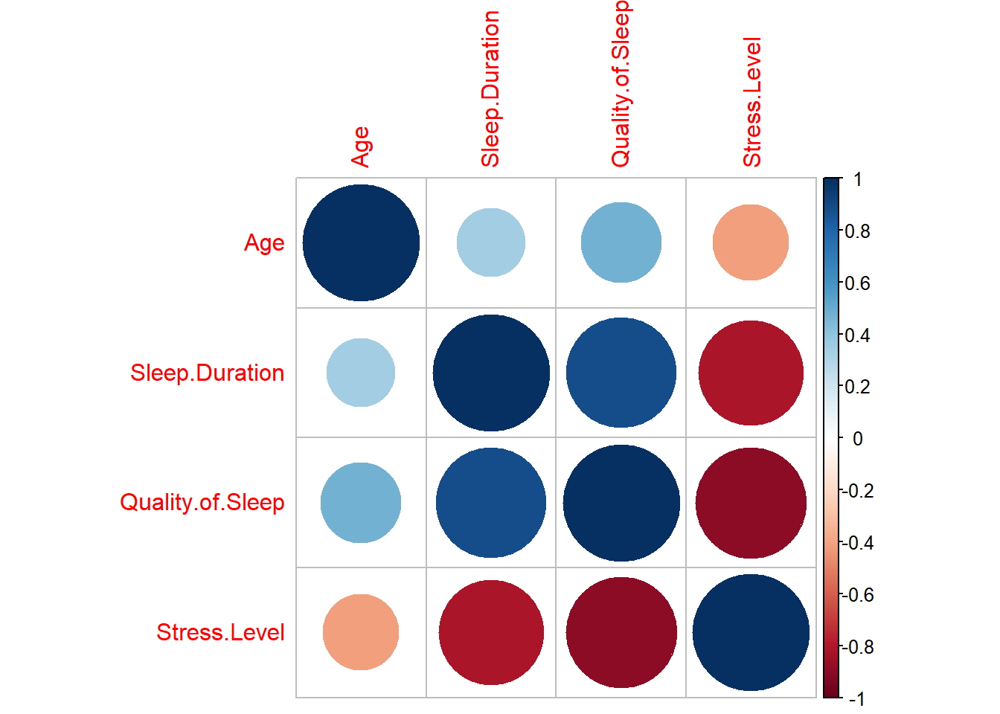
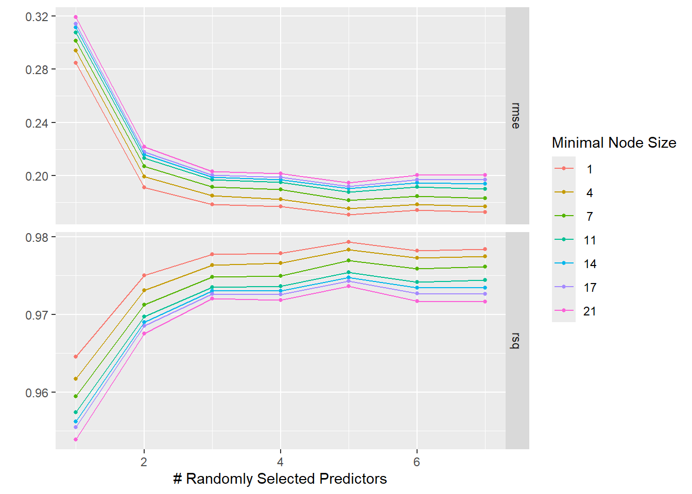
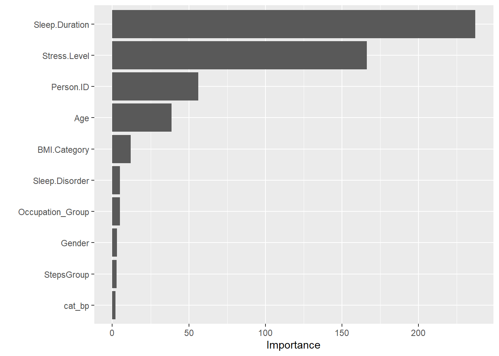
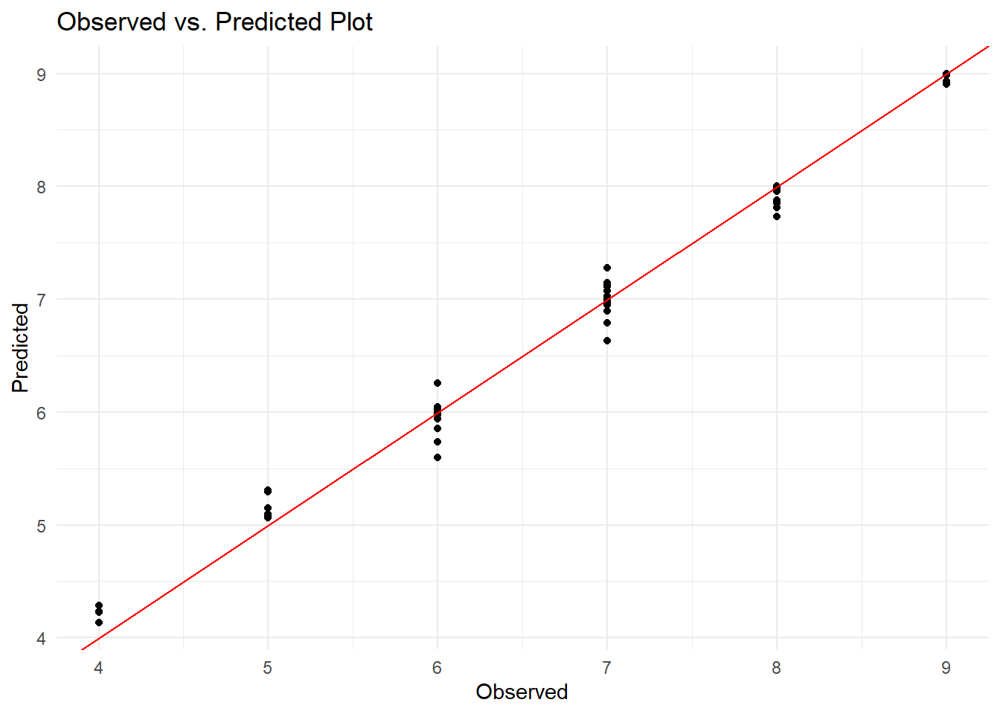
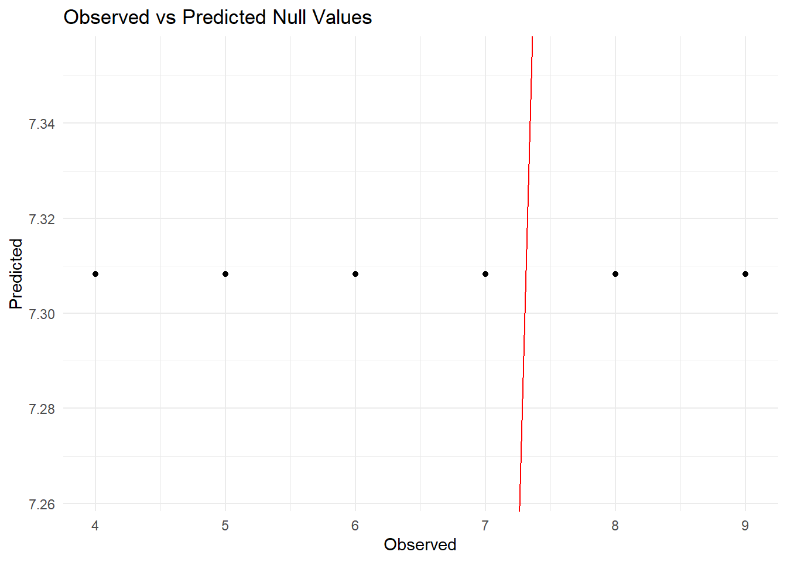

# Loading Necessary Packages
library(broom)
library(here)
library(tidymodels)
library(tidyverse)
library(corrplot)
library(ranger)
library(vip)
library(ggplot2)
library(flextable)
library(gt)statistical-analysis
#Exploratory Data Analysis: Project Part 2
Kevin Kosewick & Emma Hardin-Parker
Fitting Models and Statistical Analysis
Fitting a model using Quality of Sleep as the outcome and Physical Activity Level as a predictor
#Load the data
sleepdata<- readRDS(here("data","processed-data","sleepdataprocessed.rds"))
lmfit_quality_activity <- lm(Quality.of.Sleep ~ Physical.Activity.Level, sleepdata)
# Placing results from lmfit_quality_activty into a data frame with the tidy function
lmtable_quality_activity <- broom::tidy(lmfit_quality_activity)
# Viewing the results from the first model fit
print(lmtable_quality_activity)# A tibble: 2 × 5
term estimate std.error statistic p.value
<chr> <dbl> <dbl> <dbl> <dbl>
1 (Intercept) 6.66 0.183 36.4 2.38e-124
2 Physical.Activity.Level 0.0109 0.00292 3.74 2.12e- 4# Saving the lmfit_quality_activity results table
lmtable_quality_activity = here("results", "tables", "lmfit1table.rds")
saveRDS(lmtable_quality_activity, file = lmtable_quality_activity)The intercept value indicates that Quality of Sleep will be 6.66 if physical activity is at 0. This has a relatively low standard error and high significance. The coefficient for our variable indicates that as Physical activity level increases by one unit, Quality of Sleep will increase by 0.0109. Our t-statistic is indicated as significant by the p-value but is much lower than the intercept’s. This means that Physical Activity Level does have a measurable impact on Quality of Sleep, but it’s relatively small.
####Fitting a model using Quality of Sleep as the outcome and Sleep Duration as a predictor
lmfit_quality_duration <- lm(Quality.of.Sleep ~ Sleep.Duration, sleepdata)
# Placing results from lmfit_quality_duration into a data frame with the tidy function
lmtable_quality_duration <- broom::tidy(lmfit_quality_duration)
#Viewing the results from the second model fit
print(lmtable_quality_duration)# A tibble: 2 × 5
term estimate std.error statistic p.value
<chr> <dbl> <dbl> <dbl> <dbl>
1 (Intercept) -2.15 0.263 -8.18 4.51e- 15
2 Sleep.Duration 1.33 0.0367 36.2 9.70e-124# Saving the lmfit_quality_duration results table
lmtable_quality_duration = here("results", "tables", "lmfit2table.rds")
saveRDS(lmtable_quality_duration, file = lmtable_quality_duration)For our sleep duration model, we can see that our intercept’s negative value indicates that Quality of Sleep would be very poor if individuals got no sleep. This is rational and is supported by a strong p-value and a decent t-statistic, although the standard error is a bit high.
For our variable coefficient, we can see that as sleep duration increases by one unit, Quality of sleep also increases by about 1. This has a very strong p-value and t-statistic, indicating a strong relationship between this predictor and our outcome of interest.
Fitting a model using Quality of Sleep as the outcome and Sleep Duration and Occupation as predictors
lmfit_quality_duration_occupation <- lm(Quality.of.Sleep ~ Sleep.Duration + Occupation, sleepdata)
# Placing results from lmfit_quality_duration_occupation into a data frame with the tidy function
lmtable_quality_duration_occupation <- broom::tidy(lmfit_quality_duration_occupation)
#Viewing the results from the third model fit
print(lmtable_quality_duration_occupation)# A tibble: 12 × 5
term estimate std.error statistic p.value
<chr> <dbl> <dbl> <dbl> <dbl>
1 (Intercept) -0.754 0.264 -2.85 4.61e- 3
2 Sleep.Duration 1.22 0.0358 34.0 1.54e-114
3 OccupationDoctor -1.07 0.0888 -12.1 2.42e- 28
4 OccupationEngineer -0.541 0.0958 -5.65 3.27e- 8
5 OccupationLawyer -0.359 0.0967 -3.72 2.33e- 4
6 OccupationManager -0.632 0.443 -1.43 1.54e- 1
7 OccupationNurse -0.466 0.0885 -5.27 2.41e- 7
8 OccupationSales Representative -2.42 0.320 -7.55 3.71e- 13
9 OccupationSalesperson -1.03 0.109 -9.47 3.63e- 19
10 OccupationScientist -1.54 0.234 -6.59 1.58e- 10
11 OccupationSoftware Engineer -0.950 0.230 -4.12 4.66e- 5
12 OccupationTeacher -0.402 0.101 -3.99 8.09e- 5# Saving the lmfit_quality_duration_occupation results table
lmtable_quality_duration_occupation = here("results", "tables", "lmfit3table.rds")
saveRDS(lmtable_quality_duration_occupation, file = lmtable_quality_duration_occupation)Since Occupation is a categorical variable, interpreting our intercept value is tricky. It’s hard to get good information from it since we don’t have any data from unemployed people. However, the coefficients for our predictors show a variety of interesting relationships.
Sleep Duration shows a similar relationship to our bivariate model we ran earlier. Sales representatives have the worst sleep quality by far with a strong t-statistic and p-value. Scientists, doctors, and sales persons are all about the next worst (with strong t-stats and p-values).
The occupations that seem to have the best sleep are teachers, lawyers, engineers and nurses. This is somewhat surprising since these are all demanding jobs that can have decently stressful work environments.
####Fitting a model using Sleep Quality as the outcome and BMI as a predictor.
lmfit_quality_BMI <- lm(Quality.of.Sleep~ BMI.Category, sleepdata)
#Placing results from lmfit_quality_BMI into a data frame with the tidy function
lmtable_quality_BMI <- broom::tidy(lmfit_quality_BMI)
#Viewing the results from the fourth model fit
print(lmtable_quality_BMI)# A tibble: 3 × 5
term estimate std.error statistic p.value
<chr> <dbl> <dbl> <dbl> <dbl>
1 (Intercept) 7.64 0.0770 99.3 9.19e-269
2 BMI.CategoryObese -1.24 0.366 -3.39 7.84e- 4
3 BMI.CategoryOverweight -0.755 0.121 -6.24 1.20e- 9# Saving the lmfit_quality_BMI results table
lmtable_quality_BMI = here("results", "tables", "lmfit4table.rds")
saveRDS(lmtable_quality_BMI, file = lmtable_quality_BMI)We can see that Obese individuals have a stronger negative relationship with Sleep Quality than Overweight individuals. The lower t-statistics and p-values are likely due to fewer observations for Obese individuals in the dataset. However, it is all still statistically significant and has reasonable standard errors.
####Fitting a model using Sleep Quality as the outcome and Blood Pressure category as a predictor.
lmfit_quality_BP <- lm(Quality.of.Sleep~ cat_bp, sleepdata)
#Placing results from lmfit_quality_BP into a data frame with the tidy function
lmtable_quality_BP <- broom::tidy(lmfit_quality_BP)
#Viewing the results from the fifth model fit
print(lmtable_quality_BP)# A tibble: 4 × 5
term estimate std.error statistic p.value
<chr> <dbl> <dbl> <dbl> <dbl>
1 (Intercept) 8.00 1.17 6.84 3.30e-11
2 cat_bpNormal 0.0488 1.18 0.0412 9.67e- 1
3 cat_bpStage 1 Hypertension -0.812 1.17 -0.693 4.89e- 1
4 cat_bpStage 2 Hypertension -0.686 1.18 -0.582 5.61e- 1# Saving the lmfit_quality_BP results table
lmtable_quality_BP = here("results", "tables", "lmfit5table.rds")
saveRDS(lmtable_quality_BP, file = lmtable_quality_BP)We have some interesting results for this one. Our values aren’t statistically significant according to p-values, but we can see that Stage 1 Hypertension seems to have the biggest negative impact on Quality of Sleep. This is surprising since we would expect more severe hypertension to result in worse sleep, but according to our model, Stage 2 hypertension has less impact than Stage 2.
Normal blood pressure seems to have a small positive impact on sleep quality according to our model. All of these predictors seem to have a relatively small impact as they impact the sleep quality scale by less than one whole unit. Given our p-values and low t-statistics, however, this model should be taken with a grain of salt.
####Fitting a model using Sleep Quality as the outcome and Stress Level as a predictor.
lmfit_quality_stress <- lm(Quality.of.Sleep~ Stress.Level, sleepdata)
#Placing results from lmfit_quality_stress into a data frame with the tidy function
lmtable_quality_stress <- broom::tidy(lmfit_quality_stress)
#Viewing the results from the sixth model fit
print(lmtable_quality_stress)# A tibble: 2 × 5
term estimate std.error statistic p.value
<chr> <dbl> <dbl> <dbl> <dbl>
1 (Intercept) 10.6 0.0873 121. 2.42e-300
2 Stress.Level -0.606 0.0154 -39.4 1.60e-134# Saving the lmfit_quality_stress results table
lmtable_quality_stress = here("results", "tables", "lmfit6table.rds")
saveRDS(lmtable_quality_stress, file = lmtable_quality_stress)According to our model, Stress has a strongly defined relationship with sleep quality. We can see that a value of 0 on the stress score leads to a 10 unit increase in quality of sleep.
The Stress Level coefficient indicates that as stress increases by one unit, sleep quality decreases by about 0.6 of a unit. The t-statistics and p-values for the values in this model are extremely strong, indicating a well-defined relationship between stress and sleep quality.
####Fitting a model using Sleep Quality as the outcome and Age and Gender as predictors.
lmfit_quality_gender_age <- lm(Quality.of.Sleep~ Gender + Age, sleepdata)
#Placing results from lmfit_quality_gender_age into a data frame with the tidy function
lmtable_quality_gender_age <- broom::tidy(lmfit_quality_gender_age)
#Viewing the results from the seventh model fit
print(lmtable_quality_gender_age)# A tibble: 3 × 5
term estimate std.error statistic p.value
<chr> <dbl> <dbl> <dbl> <dbl>
1 (Intercept) 4.63 0.382 12.1 9.39e-29
2 GenderMale -0.0336 0.136 -0.246 8.06e- 1
3 Age 0.0639 0.00790 8.09 8.81e-15# Saving the lmfit_quality_gender_age results table
lmtable_quality_gender_age = here("results", "tables", "lmfit7table.rds")
saveRDS(lmtable_quality_gender_age, file = lmtable_quality_gender_age)According to our table, Males seem to have lower sleep quality than females by about a score of .0336. However, the t-statistic is very low and the p-value is very poor. Gender doesn’t seem to be a good predictor of sleep quality.
When age is factored with gender, we can see that quality of sleep seems to increase slightly along with age. The t-statistic and p-value are both strong for this predictor; it may be worth doing a simple bivariate analysis of age.
####Fitting a model using Sleep Quality as the outcome and Age as a predictor.
lmfit_quality_age <- lm(Quality.of.Sleep~ Age, sleepdata)
#Placing results from lmfit_quality_age into a data frame with the tidy function
lmtable_quality_age <- broom::tidy(lmfit_quality_age)
#Viewing the results from the eighth model fit
print(lmtable_quality_age)# A tibble: 2 × 5
term estimate std.error statistic p.value
<chr> <dbl> <dbl> <dbl> <dbl>
1 (Intercept) 4.57 0.273 16.8 2.60e-47
2 Age 0.0650 0.00634 10.3 6.75e-22# Saving the lmfit_quality_age results table
lmtable_quality_age = here("results", "tables", "lmfit8table.rds")
saveRDS(lmtable_quality_age, file = lmtable_quality_age)Our model shows a strong relationship between age and quality of sleep. As Age increases, sleep quality seems to improve. Each year increase in age is predicted to have a 0.065 increase in sleep quality score.
The intercept here is also interesting as an age of “0” is predicted to have a sleep score of 4.57, which is relatively poor. The t-statistics and p-values for these are both strong.
####Fitting a model using Sleep Quality as the outcome and a newly grouped Occupatiin variable as the predictor.
Now we’ll create a new variable that groups the different occupations to make analysis more succinct.
# Create a new column
sleepdata$Occupation_Group <- as.character(sleepdata$Occupation)
# Map occupations to broader categories
sleepdata$Occupation_Group[sleepdata$Occupation %in% c('Nurse', 'Doctor')] <- 'Healthcare'
sleepdata$Occupation_Group[sleepdata$Occupation == 'Teacher'] <- 'Education'
sleepdata$Occupation_Group[sleepdata$Occupation %in% c('Software Engineer', 'Engineer')] <- 'Engineering'
sleepdata$Occupation_Group[sleepdata$Occupation %in% c('Accountant', 'Salesperson', 'Sales Representative', 'Manager')] <- 'Business/Finance'
sleepdata$Occupation_Group[sleepdata$Occupation == 'Scientist'] <- 'Science'
# Convert the new column to a factor
sleepdata$Occupation_Group <- as.factor(sleepdata$Occupation_Group)
## This should help with analysis of this variable. We'll fit this to a model now to test it.
lmfit_quality_occupation <- lm(Quality.of.Sleep~ Occupation_Group, sleepdata)
#Placing results from lmfit_quality_occupation into a data frame with the tidy function
lmtable_quality_occupation <- broom::tidy(lmfit_quality_occupation)
#Viewing the results from the occupation model fit
print(lmtable_quality_occupation)# A tibble: 6 × 5
term estimate std.error statistic p.value
<chr> <dbl> <dbl> <dbl> <dbl>
1 (Intercept) 6.93 0.123 56.3 1.09e-182
2 Occupation_GroupEducation 0.0444 0.206 0.216 8.29e- 1
3 Occupation_GroupEngineering 1.37 0.177 7.72 1.13e- 13
4 Occupation_GroupHealthcare 0.0694 0.151 0.460 6.46e- 1
5 Occupation_GroupLawyer 0.963 0.196 4.92 1.32e- 6
6 Occupation_GroupScience -1.93 0.536 -3.60 3.63e- 4# Saving the lmfit_quality_gender_age results table
lmtable_quality_occupation = here("results", "tables", "lmfit9table.rds")
saveRDS(lmtable_quality_occupation, file = lmtable_quality_occupation)Looking at our newly grouped occupations, we can see that our intercept has a high t-statistic and significance; this indicates that our reference category of Business/Finance jobs have a sleep quality score of about 7, which is pretty good.
Teaching and healthcare professions don’t seem to have a significant impact on an individual’s sleep quality score. They have low t-statistics and large p-values.
Engineers seem to have the best sleep quality score; they’re predicted to have a score of about 8.3 (with strong p-values and t-statistics). Scientists seem to have the worst score; they’re predicted to have 2 points lower sleep quality than our intercept. The t-statistic and p-value are both strong for this group.
Lawyers fall in the middle, having a decent increase in sleep quality compared to the intercept and solid p-values and t-statistics to support this.
Now we’ll create a table that combines all of these results to put in the manuscript.
# Create a list of all models
models <- list(
PhysicalActivity = lmfit_quality_activity,
Occupation = lmfit_quality_occupation,
Age = lmfit_quality_age,
StressLevel = lmfit_quality_stress,
Hypertension = lmfit_quality_BP,
SleepDuration = lmfit_quality_duration,
BMI = lmfit_quality_BMI,
Gender_and_Age = lmfit_quality_gender_age
)
# Create an empty data frame to store results
all_results <- data.frame()
# Loop through each model, tidy the results, and bind to all_results
for(i in 1:length(models)) {
model_name <- names(models)[i]
model_results <- broom::tidy(models[[i]])
model_results$model <- model_name # add a column to identify the model
all_results <- rbind(all_results, model_results)
}
# Now all_results contains the combined results of all models
print(all_results)# A tibble: 24 × 6
term estimate std.error statistic p.value model
<chr> <dbl> <dbl> <dbl> <dbl> <chr>
1 (Intercept) 6.66 0.183 36.4 2.38e-124 PhysicalA…
2 Physical.Activity.Level 0.0109 0.00292 3.74 2.12e- 4 PhysicalA…
3 (Intercept) 6.93 0.123 56.3 1.09e-182 Occupation
4 Occupation_GroupEducation 0.0444 0.206 0.216 8.29e- 1 Occupation
5 Occupation_GroupEngineering 1.37 0.177 7.72 1.13e- 13 Occupation
6 Occupation_GroupHealthcare 0.0694 0.151 0.460 6.46e- 1 Occupation
7 Occupation_GroupLawyer 0.963 0.196 4.92 1.32e- 6 Occupation
8 Occupation_GroupScience -1.93 0.536 -3.60 3.63e- 4 Occupation
9 (Intercept) 4.57 0.273 16.8 2.60e- 47 Age
10 Age 0.0650 0.00634 10.3 6.75e- 22 Age
# ℹ 14 more rows# Save the combined results table
all_results_path = here("results", "tables", "all_results.rds")
saveRDS(all_results, file = all_results_path)
# Transform p-values to scientific notation to make table cleaner to read
all_results$p.value <- format(all_results$p.value, scientific = TRUE, digits = 2)
# Create a flextable
ft <- flextable::flextable(all_results)
# Print the table
print(ft)a flextable object.
col_keys: `term`, `estimate`, `std.error`, `statistic`, `p.value`, `model`
header has 1 row(s)
body has 24 row(s)
original dataset sample:
term estimate std.error statistic p.value
1 (Intercept) 6.66170766 0.183224544 36.3581621 2.4e-124
2 Physical.Activity.Level 0.01093553 0.002922925 3.7412951 2.1e-04
3 (Intercept) 6.93055556 0.123054911 56.3208368 1.1e-182
4 Occupation_GroupEducation 0.04444444 0.205910250 0.2158438 8.3e-01
5 Occupation_GroupEngineering 1.36795191 0.177242942 7.7179486 1.1e-13
model
1 PhysicalActivity
2 PhysicalActivity
3 Occupation
4 Occupation
5 Occupation# Save the flextable as an image
flextable::save_as_image(ft, path = here("results", "tables", "table.png"))[1] "D:/MADA/KOSEWICK-HARDINPARKER-MADA-project/KOSEWICK-HARDIN-PARKER-MADA-project/results/tables/table.png"# Now we'll remove unnecessary variables (e.g. ones we've feature engineered into more useful ones) to make our analyses easier.
sleepdatafinal <- subset(sleepdata, select = -c(Occupation, systolic, diastolic, Daily.Steps, Physical.Activity.Level, Heart.Rate, AgeGroup))Creating a collinearity plot
We’ll make sure there isn’t collinearity between our continuous variables before we fit more complex models.
# Select the variables
continuous_vars <- sleepdatafinal[, c("Age", "Sleep.Duration", "Quality.of.Sleep", "Stress.Level")]
# Compute correlation matrix
correlation_matrix <- cor(continuous_vars)
# Create a pairwise correlation plot (using corrplot)
correlation <- corrplot(correlation_matrix, method = "circle")
#Save the correlation plot
correlation = here("results", "figures", "correlation.rds")
saveRDS(correlation, file = correlation)It seems that stress level and quality of sleep are at an absolute value of 0.9 or higher on the correlation scale. Sleep Duration and stress level also seem closely tied. Stress level and quality of sleep are both subjective scales given by an individual; this is interesting to note.
We’re definitely still interested in stress as a predictor as previous work has clearly identified it as a key factor in sleep quality. We’ll keep it in our analysis, but it seems good to note that it has a very linear relationship with sleep quality.
Fitting a Random Forest model using cross validation
First, we’ll create a random seed to aid in reproducibility.
#Set the seed
rngseed=1234
set.seed(rngseed)We’ll now train a Random Forest model using CV with no train/test split (as the data has less than 400 observations and many of the values are rare/unique for some columns). We’ll follow the tidymodels framework.
# Random Forest model specification; include the mtry and min_n parameters
model_spec <- rand_forest(mtry = tune(), min_n = tune(), trees = 300) %>%
set_engine("ranger", importance = 'impurity', seed = rngseed) %>%
set_mode("regression")
# Specify the recipe
data_recipe <- recipe(Quality.of.Sleep ~ ., data = sleepdatafinal)
# Create Random Forest workflow
data_workflow <- workflow() %>%
add_model(model_spec) %>%
add_recipe(data_recipe)
# Create resamples using 5-fold cross-validation, 5 times repeated
resamples <- vfold_cv(sleepdatafinal, v = 5, repeats = 5)
# Define the grid of parameters
mtry_param <- mtry(range = c(1, 7))
min_n_param <- min_n(range = c(1, 21))
rf_grid <- grid_regular(mtry_param, min_n_param, levels = 7)
# Tune the Random Forest model
tune_results_rf <- tune_grid(
data_workflow,
resamples = resamples,
grid = rf_grid
)→ A | error: Missing data in columns: cat_bp.There were issues with some computations A: x1There were issues with some computations A: x16There were issues with some computations A: x38There were issues with some computations A: x50There were issues with some computations A: x54There were issues with some computations A: x95There were issues with some computations A: x99There were issues with some computations A: x102There were issues with some computations A: x143There were issues with some computations A: x148There were issues with some computations A: x157There were issues with some computations A: x197There were issues with some computations A: x206There were issues with some computations A: x245# Print RF results
print(tune_results_rf)# Tuning results
# 5-fold cross-validation repeated 5 times
# A tibble: 25 × 5
splits id id2 .metrics .notes
<list> <chr> <chr> <list> <list>
1 <split [298/75]> Repeat1 Fold1 <tibble [98 × 6]> <tibble [0 × 3]>
2 <split [298/75]> Repeat1 Fold2 <tibble [98 × 6]> <tibble [0 × 3]>
3 <split [298/75]> Repeat1 Fold3 <tibble [98 × 6]> <tibble [0 × 3]>
4 <split [299/74]> Repeat1 Fold4 <tibble [0 × 6]> <tibble [49 × 3]>
5 <split [299/74]> Repeat1 Fold5 <tibble [98 × 6]> <tibble [0 × 3]>
6 <split [298/75]> Repeat2 Fold1 <tibble [98 × 6]> <tibble [0 × 3]>
7 <split [298/75]> Repeat2 Fold2 <tibble [98 × 6]> <tibble [0 × 3]>
8 <split [298/75]> Repeat2 Fold3 <tibble [0 × 6]> <tibble [49 × 3]>
9 <split [299/74]> Repeat2 Fold4 <tibble [98 × 6]> <tibble [0 × 3]>
10 <split [299/74]> Repeat2 Fold5 <tibble [98 × 6]> <tibble [0 × 3]>
# ℹ 15 more rows
There were issues with some computations:
- Error(s) x245: Missing data in columns: cat_bp.
Run `show_notes(.Last.tune.result)` for more information.#Plot them too
autoplot(tune_results_rf)
We’ve successfully fit our RF model; now, we can pick the different pieces apart and see what predictors seem the most important and which model is best.
####Best RMSE model
best_params <- select_best(tune_results_rf, metric = "rmse")
#Variable importance info
# Finalize the workflow with the best parameters
final_wf <- finalize_workflow(data_workflow, best_params)
# Fit the finalized workflow to the entire data
final_fit <- fit(final_wf, data = sleepdatafinal)
# Extract the fitted model
fitted_model <- extract_fit_parsnip(final_fit)
# Create a variable importance plot
vip(fitted_model$fit)
We can see that sleep duration, stress level, and Age seem to have the most importance for our model.
PhysicalActivityLevel doesn’t seem to have much of an impact on Quality of Sleep, as it was excluded from the variable importance plot altogether. These results are pretty in line with what we discovered with our EDA and our simple linear models, but now we have a ranking given by this plot.
Now, we’ll see how well this model predicts on new data.
# Make predictions
predictions <- predict(final_fit, new_data = sleepdatafinal)
# Add the predictions to dataframe
sleepdatafinal$Predicted <- predictions$.pred
# Create an observed vs. predicted plot
ggplot(sleepdatafinal, aes(x = Quality.of.Sleep, y = Predicted)) +
geom_point() +
geom_abline(color = "red") +
labs(x = "Observed", y = "Predicted", title = "Observed vs. Predicted Plot") +
theme_minimal()
#Now we'll calculate the RMSE and R squared values of our "best" set of parameters
# Calculate residuals
residuals <- sleepdatafinal$Quality.of.Sleep - predictions$.pred
# Calculate RMSE
rf_rmse <- sqrt(mean(residuals^2))
# Calculate R squared
sst <- sum((sleepdatafinal$Quality.of.Sleep - mean(sleepdatafinal$Quality.of.Sleep))^2)
ssr <- sum(residuals^2)
rf_r_squared <- 1 - (ssr / sst)
#print results
print(rf_rmse)[1] 0.05988713print(rf_r_squared)[1] 0.9974833This seems like a very solid fit; not too close to where overfitting is obvious, but not too far to where the predictions aren’t useful either. The RMSE is extremely low (.059) and the R squared is extremely high (0.997). This is a good indicator that our selected model is powerful.
Random Forest Model Evaluation
Now, we’ll make a “null” model and compare its results to that of our RF in order to make sure that the RF is useful.
# Specify the null model
null_mod <- null_model() %>%
set_engine("parsnip") %>%
set_mode("regression")
# Fit the null model to the data
null_fit <- fit(null_mod, Quality.of.Sleep ~ 1, data = sleepdatafinal)
# Make predictions
null_predictions <- predict(null_fit, new_data = sleepdatafinal)
# Bind the predictions with the actual values
data_with_predictions <- bind_cols(sleepdatafinal, null_predictions)
# Compute RMSE
null_rmse <- rmse(data_with_predictions, truth = Quality.of.Sleep, estimate = .pred)
# Print the RMSE
print(null_rmse)# A tibble: 1 × 3
.metric .estimator .estimate
<chr> <chr> <dbl>
1 rmse standard 1.19This RMSE is a good bit higher than the 0.2-0.32 range of all of our Random Forest models. This is a good sign that the RF model performs well on the data.
# Compute R-squared
r_squared <- rsq(data_with_predictions, truth = Quality.of.Sleep, estimate = .pred)Warning: A correlation computation is required, but `estimate` is constant and
has 0 standard deviation, resulting in a divide by 0 error. `NA` will be
returned.# Print the R-squared
print(r_squared)# A tibble: 1 × 3
.metric .estimator .estimate
<chr> <chr> <dbl>
1 rsq standard NA# Create a predicted v observed plot
ggplot(data_with_predictions, aes(x = Quality.of.Sleep, y = .pred)) +
geom_point() +
geom_abline(color = "red") +
labs(x = "Observed", y = "Predicted", title = "Observed vs Predicted Null Values") +
theme_minimal()
Since there is no variation between the model predictions and the observed values in a null model, the R squared is not possible to generate. The observed vs predicted plot is also as expected; a straight line of predictions that all match the average sleep quality score.
Now we’ll make a table for the manuscript comparing the metrics we evaluated.
#extract the metric values for the null model from the objects they're stored in
null_rmse_value <- null_rmse$.estimate
null_r_squared_value <- r_squared$.estimate
# Create a data frame
results <- data.frame(
Model = c("Random Forest", "Null Model"),
`R-squared` = c(rf_r_squared, null_r_squared_value),
RMSE = c(rf_rmse, null_rmse_value)
)
# Create the table
gt_table <- gt(results)
# Print the table
print(gt_table)<div id="zxoahyylmq" style="padding-left:0px;padding-right:0px;padding-top:10px;padding-bottom:10px;overflow-x:auto;overflow-y:auto;width:auto;height:auto;">
<style>#zxoahyylmq table {
font-family: system-ui, 'Segoe UI', Roboto, Helvetica, Arial, sans-serif, 'Apple Color Emoji', 'Segoe UI Emoji', 'Segoe UI Symbol', 'Noto Color Emoji';
-webkit-font-smoothing: antialiased;
-moz-osx-font-smoothing: grayscale;
}
#zxoahyylmq thead, #zxoahyylmq tbody, #zxoahyylmq tfoot, #zxoahyylmq tr, #zxoahyylmq td, #zxoahyylmq th {
border-style: none;
}
#zxoahyylmq p {
margin: 0;
padding: 0;
}
#zxoahyylmq .gt_table {
display: table;
border-collapse: collapse;
line-height: normal;
margin-left: auto;
margin-right: auto;
color: #333333;
font-size: 16px;
font-weight: normal;
font-style: normal;
background-color: #FFFFFF;
width: auto;
border-top-style: solid;
border-top-width: 2px;
border-top-color: #A8A8A8;
border-right-style: none;
border-right-width: 2px;
border-right-color: #D3D3D3;
border-bottom-style: solid;
border-bottom-width: 2px;
border-bottom-color: #A8A8A8;
border-left-style: none;
border-left-width: 2px;
border-left-color: #D3D3D3;
}
#zxoahyylmq .gt_caption {
padding-top: 4px;
padding-bottom: 4px;
}
#zxoahyylmq .gt_title {
color: #333333;
font-size: 125%;
font-weight: initial;
padding-top: 4px;
padding-bottom: 4px;
padding-left: 5px;
padding-right: 5px;
border-bottom-color: #FFFFFF;
border-bottom-width: 0;
}
#zxoahyylmq .gt_subtitle {
color: #333333;
font-size: 85%;
font-weight: initial;
padding-top: 3px;
padding-bottom: 5px;
padding-left: 5px;
padding-right: 5px;
border-top-color: #FFFFFF;
border-top-width: 0;
}
#zxoahyylmq .gt_heading {
background-color: #FFFFFF;
text-align: center;
border-bottom-color: #FFFFFF;
border-left-style: none;
border-left-width: 1px;
border-left-color: #D3D3D3;
border-right-style: none;
border-right-width: 1px;
border-right-color: #D3D3D3;
}
#zxoahyylmq .gt_bottom_border {
border-bottom-style: solid;
border-bottom-width: 2px;
border-bottom-color: #D3D3D3;
}
#zxoahyylmq .gt_col_headings {
border-top-style: solid;
border-top-width: 2px;
border-top-color: #D3D3D3;
border-bottom-style: solid;
border-bottom-width: 2px;
border-bottom-color: #D3D3D3;
border-left-style: none;
border-left-width: 1px;
border-left-color: #D3D3D3;
border-right-style: none;
border-right-width: 1px;
border-right-color: #D3D3D3;
}
#zxoahyylmq .gt_col_heading {
color: #333333;
background-color: #FFFFFF;
font-size: 100%;
font-weight: normal;
text-transform: inherit;
border-left-style: none;
border-left-width: 1px;
border-left-color: #D3D3D3;
border-right-style: none;
border-right-width: 1px;
border-right-color: #D3D3D3;
vertical-align: bottom;
padding-top: 5px;
padding-bottom: 6px;
padding-left: 5px;
padding-right: 5px;
overflow-x: hidden;
}
#zxoahyylmq .gt_column_spanner_outer {
color: #333333;
background-color: #FFFFFF;
font-size: 100%;
font-weight: normal;
text-transform: inherit;
padding-top: 0;
padding-bottom: 0;
padding-left: 4px;
padding-right: 4px;
}
#zxoahyylmq .gt_column_spanner_outer:first-child {
padding-left: 0;
}
#zxoahyylmq .gt_column_spanner_outer:last-child {
padding-right: 0;
}
#zxoahyylmq .gt_column_spanner {
border-bottom-style: solid;
border-bottom-width: 2px;
border-bottom-color: #D3D3D3;
vertical-align: bottom;
padding-top: 5px;
padding-bottom: 5px;
overflow-x: hidden;
display: inline-block;
width: 100%;
}
#zxoahyylmq .gt_spanner_row {
border-bottom-style: hidden;
}
#zxoahyylmq .gt_group_heading {
padding-top: 8px;
padding-bottom: 8px;
padding-left: 5px;
padding-right: 5px;
color: #333333;
background-color: #FFFFFF;
font-size: 100%;
font-weight: initial;
text-transform: inherit;
border-top-style: solid;
border-top-width: 2px;
border-top-color: #D3D3D3;
border-bottom-style: solid;
border-bottom-width: 2px;
border-bottom-color: #D3D3D3;
border-left-style: none;
border-left-width: 1px;
border-left-color: #D3D3D3;
border-right-style: none;
border-right-width: 1px;
border-right-color: #D3D3D3;
vertical-align: middle;
text-align: left;
}
#zxoahyylmq .gt_empty_group_heading {
padding: 0.5px;
color: #333333;
background-color: #FFFFFF;
font-size: 100%;
font-weight: initial;
border-top-style: solid;
border-top-width: 2px;
border-top-color: #D3D3D3;
border-bottom-style: solid;
border-bottom-width: 2px;
border-bottom-color: #D3D3D3;
vertical-align: middle;
}
#zxoahyylmq .gt_from_md > :first-child {
margin-top: 0;
}
#zxoahyylmq .gt_from_md > :last-child {
margin-bottom: 0;
}
#zxoahyylmq .gt_row {
padding-top: 8px;
padding-bottom: 8px;
padding-left: 5px;
padding-right: 5px;
margin: 10px;
border-top-style: solid;
border-top-width: 1px;
border-top-color: #D3D3D3;
border-left-style: none;
border-left-width: 1px;
border-left-color: #D3D3D3;
border-right-style: none;
border-right-width: 1px;
border-right-color: #D3D3D3;
vertical-align: middle;
overflow-x: hidden;
}
#zxoahyylmq .gt_stub {
color: #333333;
background-color: #FFFFFF;
font-size: 100%;
font-weight: initial;
text-transform: inherit;
border-right-style: solid;
border-right-width: 2px;
border-right-color: #D3D3D3;
padding-left: 5px;
padding-right: 5px;
}
#zxoahyylmq .gt_stub_row_group {
color: #333333;
background-color: #FFFFFF;
font-size: 100%;
font-weight: initial;
text-transform: inherit;
border-right-style: solid;
border-right-width: 2px;
border-right-color: #D3D3D3;
padding-left: 5px;
padding-right: 5px;
vertical-align: top;
}
#zxoahyylmq .gt_row_group_first td {
border-top-width: 2px;
}
#zxoahyylmq .gt_row_group_first th {
border-top-width: 2px;
}
#zxoahyylmq .gt_summary_row {
color: #333333;
background-color: #FFFFFF;
text-transform: inherit;
padding-top: 8px;
padding-bottom: 8px;
padding-left: 5px;
padding-right: 5px;
}
#zxoahyylmq .gt_first_summary_row {
border-top-style: solid;
border-top-color: #D3D3D3;
}
#zxoahyylmq .gt_first_summary_row.thick {
border-top-width: 2px;
}
#zxoahyylmq .gt_last_summary_row {
padding-top: 8px;
padding-bottom: 8px;
padding-left: 5px;
padding-right: 5px;
border-bottom-style: solid;
border-bottom-width: 2px;
border-bottom-color: #D3D3D3;
}
#zxoahyylmq .gt_grand_summary_row {
color: #333333;
background-color: #FFFFFF;
text-transform: inherit;
padding-top: 8px;
padding-bottom: 8px;
padding-left: 5px;
padding-right: 5px;
}
#zxoahyylmq .gt_first_grand_summary_row {
padding-top: 8px;
padding-bottom: 8px;
padding-left: 5px;
padding-right: 5px;
border-top-style: double;
border-top-width: 6px;
border-top-color: #D3D3D3;
}
#zxoahyylmq .gt_last_grand_summary_row_top {
padding-top: 8px;
padding-bottom: 8px;
padding-left: 5px;
padding-right: 5px;
border-bottom-style: double;
border-bottom-width: 6px;
border-bottom-color: #D3D3D3;
}
#zxoahyylmq .gt_striped {
background-color: rgba(128, 128, 128, 0.05);
}
#zxoahyylmq .gt_table_body {
border-top-style: solid;
border-top-width: 2px;
border-top-color: #D3D3D3;
border-bottom-style: solid;
border-bottom-width: 2px;
border-bottom-color: #D3D3D3;
}
#zxoahyylmq .gt_footnotes {
color: #333333;
background-color: #FFFFFF;
border-bottom-style: none;
border-bottom-width: 2px;
border-bottom-color: #D3D3D3;
border-left-style: none;
border-left-width: 2px;
border-left-color: #D3D3D3;
border-right-style: none;
border-right-width: 2px;
border-right-color: #D3D3D3;
}
#zxoahyylmq .gt_footnote {
margin: 0px;
font-size: 90%;
padding-top: 4px;
padding-bottom: 4px;
padding-left: 5px;
padding-right: 5px;
}
#zxoahyylmq .gt_sourcenotes {
color: #333333;
background-color: #FFFFFF;
border-bottom-style: none;
border-bottom-width: 2px;
border-bottom-color: #D3D3D3;
border-left-style: none;
border-left-width: 2px;
border-left-color: #D3D3D3;
border-right-style: none;
border-right-width: 2px;
border-right-color: #D3D3D3;
}
#zxoahyylmq .gt_sourcenote {
font-size: 90%;
padding-top: 4px;
padding-bottom: 4px;
padding-left: 5px;
padding-right: 5px;
}
#zxoahyylmq .gt_left {
text-align: left;
}
#zxoahyylmq .gt_center {
text-align: center;
}
#zxoahyylmq .gt_right {
text-align: right;
font-variant-numeric: tabular-nums;
}
#zxoahyylmq .gt_font_normal {
font-weight: normal;
}
#zxoahyylmq .gt_font_bold {
font-weight: bold;
}
#zxoahyylmq .gt_font_italic {
font-style: italic;
}
#zxoahyylmq .gt_super {
font-size: 65%;
}
#zxoahyylmq .gt_footnote_marks {
font-size: 75%;
vertical-align: 0.4em;
position: initial;
}
#zxoahyylmq .gt_asterisk {
font-size: 100%;
vertical-align: 0;
}
#zxoahyylmq .gt_indent_1 {
text-indent: 5px;
}
#zxoahyylmq .gt_indent_2 {
text-indent: 10px;
}
#zxoahyylmq .gt_indent_3 {
text-indent: 15px;
}
#zxoahyylmq .gt_indent_4 {
text-indent: 20px;
}
#zxoahyylmq .gt_indent_5 {
text-indent: 25px;
}
</style>
<table class="gt_table" data-quarto-disable-processing="false" data-quarto-bootstrap="false">
<thead>
<tr class="gt_col_headings">
<th class="gt_col_heading gt_columns_bottom_border gt_left" rowspan="1" colspan="1" scope="col" id="Model">Model</th>
<th class="gt_col_heading gt_columns_bottom_border gt_right" rowspan="1" colspan="1" scope="col" id="R.squared">R.squared</th>
<th class="gt_col_heading gt_columns_bottom_border gt_right" rowspan="1" colspan="1" scope="col" id="RMSE">RMSE</th>
</tr>
</thead>
<tbody class="gt_table_body">
<tr><td headers="Model" class="gt_row gt_left">Random Forest</td>
<td headers="R.squared" class="gt_row gt_right">0.9974833</td>
<td headers="RMSE" class="gt_row gt_right">0.05988713</td></tr>
<tr><td headers="Model" class="gt_row gt_left">Null Model</td>
<td headers="R.squared" class="gt_row gt_right">NA</td>
<td headers="RMSE" class="gt_row gt_right">1.19375524</td></tr>
</tbody>
</table>
</div>